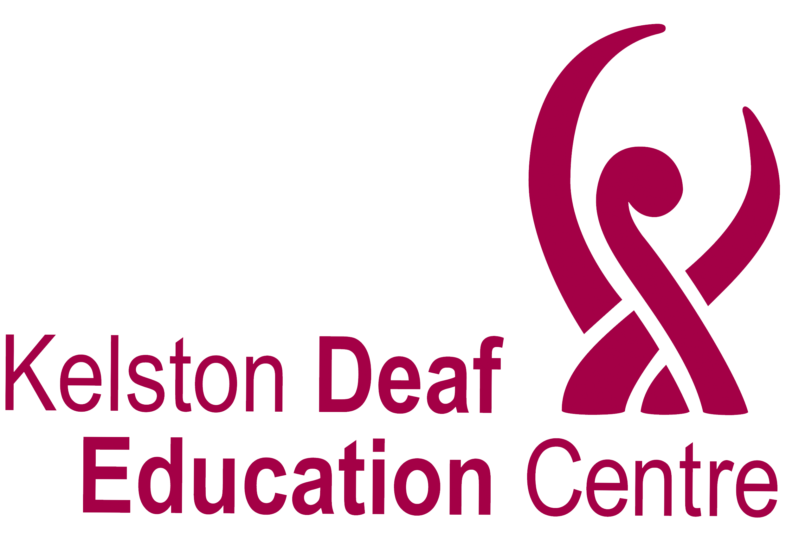
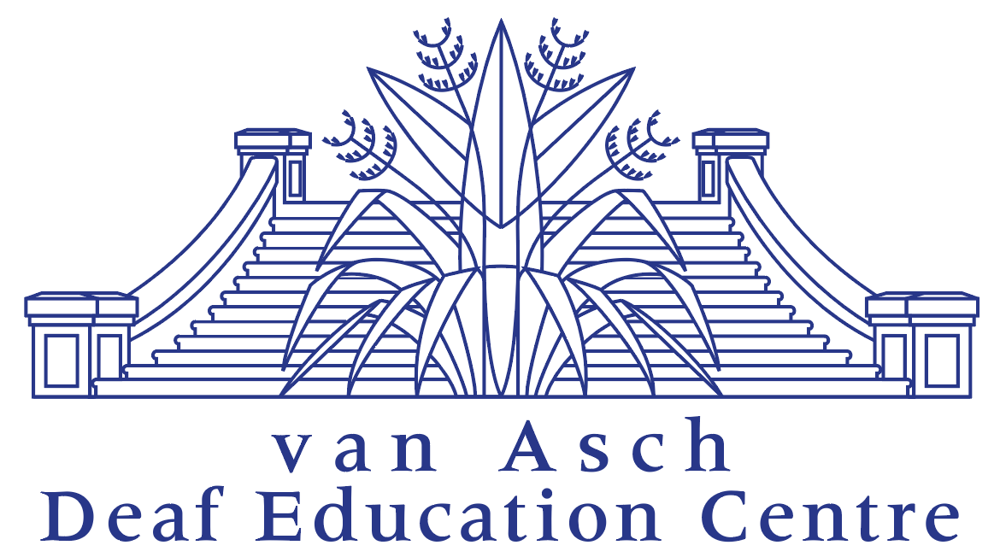
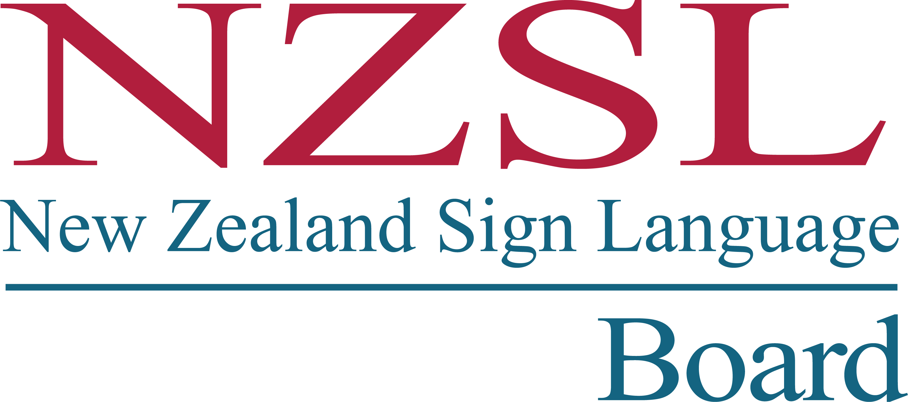
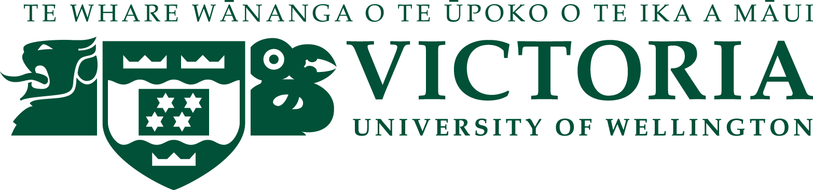

Assessing NZSL (New Zealand Sign Language) Development
Receptive Skills Test (Automatic version)
Please click here to start the Receptive Skills Test. This version of runs automatically.
- Press the Space key to pause a video at any time.
Receptive Skills Test (Manual version)
Please click here to start the Receptive Skills Test. This version requires you to progress to each slide one by one.
- Press the Space key to pause a video at any time.
- Press the → key to move to the next slide.
- Press the ← key to move to the previous slide.
Production Skills Test
Please click here to start the Production Skills Test.
- Press the Space key to pause a video at any time.
- Press the → key to move to the next slide.
- Press the ← key to move to the previous slide.
Credits



